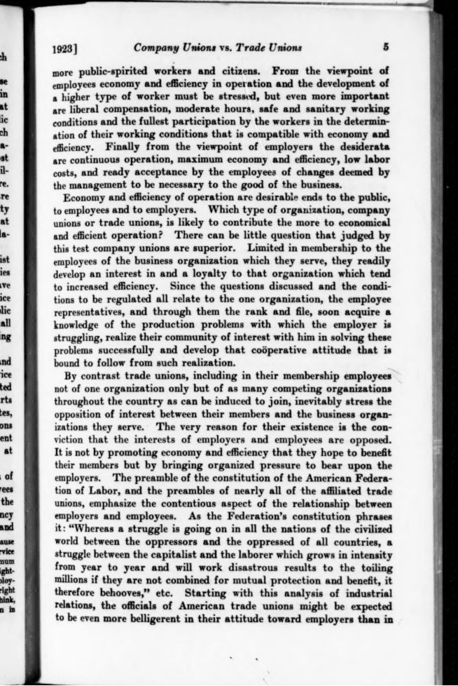

Goldenweiser, 1923: o que o ouro que chega faz com o crédito
Leitura: 5 min
E. A. Goldenweiser mostra, com um modelo de dois bancos, que o ouro importado primeiro reduz a dívida dos bancos membros com o sistema de reserva e, passado um ponto de saturação, expande o crédito fora do controle dos bancos de reserva.


E. A. Goldenweiser, de Washington, divide a história dos bancos de reserva federal em fases. Antes da entrada dos Estados Unidos na guerra, ficaram quase inertes; depois vieram a expansão a serviço do financiamento de guerra, o auge do pós-guerra e a contração e liquidação, de maio de 1920 aos primeiros meses de 1922. A quinta fase, a atual, se caracteriza pela relativa estabilidade dos ativos rentáveis totais, enquanto os redescontos continuavam em queda acentuada e eram substituídos nas carteiras, primeiro, por títulos do governo e, depois, por aceites.
O que aconteceu em 1922?
Os ativos rentáveis ficaram quase parados diante de uma entrada constante de ouro, o que indica, para o autor, aumento dos recursos disponíveis no mercado. As importações líquidas de ouro somaram cerca de US$ 238 milhões e superaram em cerca de US$ 100 milhões a redução dos ativos rentáveis dos bancos de reserva. Os preços no atacado subiram, pelo índice do Bureau of Labor Statistics, de 148 em janeiro para 154 em outubro, mas para Goldenweiser isso não prova excesso de crédito.
Em tempos normais, a expansão excessiva traria seus próprios corretivos: juros menores, saída de capital, queda do câmbio do dólar e exportação de ouro. A libra subira de US$ 4,22 em janeiro para US$ 4,61 em dezembro, e com o Canadá o movimento normal já se restabelecera, com saída de ouro em outubro. Mas os corretivos não funcionam enquanto a maior parte do mundo está fora do padrão-ouro e não equilibra seus pagamentos internacionais. A previsão do autor é que, por vários anos, o país receberá praticamente todo o ouro novo produzido, entre US$ 200 milhões e US$ 300 milhões por ano.
Como funciona o modelo?
Para isolar o mecanismo, Goldenweiser supõe atividade econômica constante e apenas dois bancos: o de reserva e um banco membro que representa todo o sistema bancário. Chega uma remessa de US$ 100 milhões em ouro para o banco membro, que a deposita no banco de reserva e a usa para reduzir sua dívida. Se o banco de reserva não quiser ver encolher a carteira de redescontos, pode vender US$ 100 milhões em títulos do governo; o mercado sente a retirada, o banco membro volta a tomar emprestado e o resultado final é que os ativos rentáveis caem US$ 100 milhões, investimentos viram redescontos e as reservas sobem US$ 100 milhões.
O processo pode continuar até que todos os investimentos virem redescontos e, depois, que os redescontos se liquidem. Assim, US$ 1.200 milhões adicionais de ouro zerariam os ativos rentáveis do banco de reserva, convertidos numa massa sólida do metal amarelo. A partir daí, o banco membro fica com reservas excedentes: baixa os juros, empresta a empreendimentos marginais e estimula o lançamento de títulos nacionais e estrangeiros. O efeito, diz, é o mesmo qualquer que seja a razão da chegada do ouro.
O sistema real reage como um só banco?
Na realidade há cerca de 10 mil bancos membros, com cerca de 60% dos recursos bancários do país, 20 mil bancos não membros e doze bancos de reserva administrados de forma independente. Para o autor, as tendências do sistema se refletem em toda a estrutura de crédito, porque os grandes bancos são membros e porque a nota do federal reserve é o único elemento elástico da moeda. Os distritos diferem, e os redescontos caíram entre fevereiro e outubro de 39% em Boston a 65% em Cleveland, mas do ponto de vista nacional o sistema é uma unidade.
“Até o ponto de saturação da esponja dos bancos de reserva, as importações de ouro podem ser absorvidas e a expansão do crédito, adiada.” (“Up to the saturation point of the reserve-bank sponge gold imports can be absorbed and credit expansion delayed.”)
Na teoria, esse ponto chega com mais de um bilhão de dólares adicionais; na prática, antes, porque alguns membros e distritos sentirão a saturação antes de outros. Além desse ponto, as importações de ouro tendem a expandir o crédito sem empréstimos dos bancos de reserva e, portanto, fora de seu controle, o que torna o problema do controle do crédito mais difícil que o normal.
Na minha leitura
Na minha leitura, o artigo é uma demonstração contábil de como a política de compra e venda de títulos dos bancos de reserva neutraliza, até certo limite, a entrada de ouro. O modelo de dois bancos mostra que o limite é dado pelo tamanho da carteira de ativos rentáveis, e não pelas reservas.
Uma nota de rodapé credita a E. L. Smead, chefe da Divisão de Operações Bancárias do Federal Reserve Board, a observação sobre a relação entre os itens do balanço. O problema é tratado como questão de controle do crédito, e não de padrão monetário.
Glossário
- Ativos rentáveis
- redescontos, aceites e títulos do governo na carteira dos bancos de reserva, que rendem juros.
- Redesconto
- empréstimo do banco de reserva a um banco membro, com garantia de títulos comerciais.
- Aceite bancário
- título de crédito comercial garantido por um banco, negociável no mercado.
- Banco membro
- banco filiado ao sistema de reserva federal, que mantém reservas no banco de reserva de seu distrito.
- Nota do federal reserve
- papel-moeda emitido pelos bancos de reserva, que o autor chama de único elemento elástico da moeda americana.
Fontes
- Effects of Further Gold Imports on our Banking Situation — E. A. Goldenweiser (Washington, D. C.) (pp. 84–91). JSTOR · Internet Archive (número completo, PDF)
- Edição completa, com os demais artigos: Nº 180 do Arquivo.
Documento em domínio público (EUA, publicado antes de 1931), via JSTOR Early Journal Content e Internet Archive. Resumo e comentário do autor deste site, sem afiliação com a American Economic Association. Encontrou um erro? Escreva: a correção é publicada no próprio texto, com data.
← Garrett, 1923: a quantidade de moeda determina os preços? ↑ Nº 180 · Seager, os sindicatos de empresa, a tarifa de 1922 e a Europa